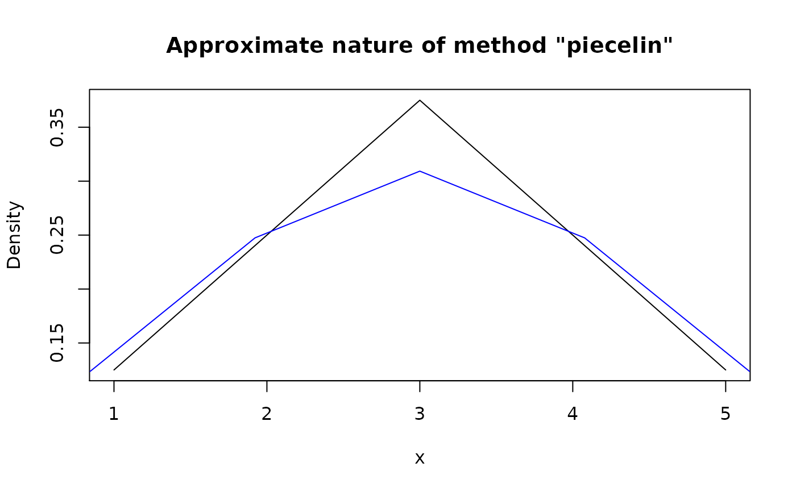

Modify type of pdqr-function using method of choice.
form_retype(f, type, method = "piecelin")| f | A pdqr-function. |
|---|---|
| type | A desired type of output. Should be one of "discrete" or "continuous". |
| method | Retyping method. Should be one of "piecelin" or "dirac". |
A pdqr-function with type equal to input type.
If type of f is equal to input type then f is returned.
Method "piecelin" (default) should be used mostly for converting from "continuous" to "discrete" type. It uses the fact that 'pdqr' densities are piecewise-linear (linear in intervals between values of "x" column of "x_tbl" metadata) on their support:
Retyping from "continuous" to type "discrete" is done by computing "x"
values as centers of interval masses with probabilities equal to interval
total probabilities.
Retyping from "discrete" to type "continuous" is made approximately by
trying to compute "x" grid, for which "x" values of input distribution are
going to be centers of mass. Algorithm is approximate and might result into a
big errors in case of small number of "x" values or if they are not
"suitable" for this kind of transformation.
Method "dirac" is used mostly for converting from "discrete" to "continuous"
type (for example, in form_mix() in case different types of input
pdqr-functions). It works in the following way:
Retyping from "continuous" to type "discrete" works only if "x_tbl"
metadata represents a mixture of dirac-like distributions. In that case it is
transformed to have "x" values from centers of those dirac-like distributions
with corresponding probabilities.
Retyping from "discrete" to type "continuous" works by transforming each
"x" value from "x_tbl" metadata into dirac-like distribution with total
probability taken from corresponding value of "prob" column. Output
essentially represents a mixture of dirac-like distributions.
form_regrid() for changing grid (rows of "x_tbl" metadata) of
pdqr-function.
form_resupport() for changing support of pdqr-function.
Other form functions: form_estimate,
form_mix, form_regrid,
form_resupport, form_smooth,
form_tails, form_trans
my_con <- new_d(data.frame(x = 1:5, y = c(1, 2, 3, 2, 1)/9), "continuous")
my_dis <- form_retype(my_con, "discrete")
meta_x_tbl(my_dis)#> x prob cumprob
#> 1 1.555556 0.1875 0.1875
#> 2 2.533333 0.3125 0.5000
#> 3 3.466667 0.3125 0.8125
#> 4 4.444444 0.1875 1.0000#> x y cumprob
#> 1 1.555556 0 0.00000
#> 2 1.555556 18750000 0.09375
#> 3 1.555556 0 0.18750
#> 4 2.533333 0 0.18750
#> 5 2.533333 31250000 0.34375
#> 6 2.533333 0 0.50000
#> 7 3.466667 0 0.50000
#> 8 3.466667 31250000 0.65625
#> 9 3.466667 0 0.81250
#> 10 4.444444 0 0.81250
#> 11 4.444444 18750000 0.90625
#> 12 4.444444 0 1.00000
# Default retyping from "discrete" to "continuous" isn't very accurate for
# small number of points/intervals
my_con_2 <- form_retype(my_dis, "continuous")
meta_x_tbl(my_con_2)#> x y cumprob
#> 1 0.8444444 0.1237113 0.0
#> 2 1.9222222 0.2474227 0.2
#> 3 3.0000000 0.3092784 0.5
#> 4 4.0777778 0.2474227 0.8
#> 5 5.1555556 0.1237113 1.0
plot(my_con)